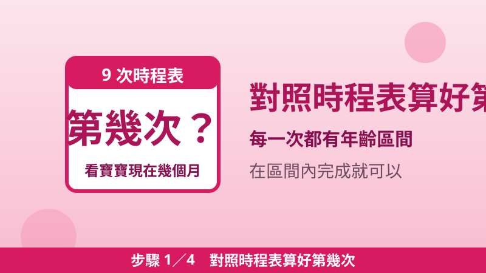
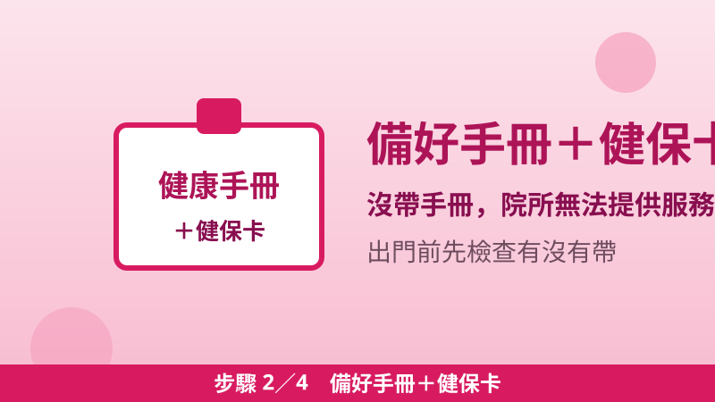
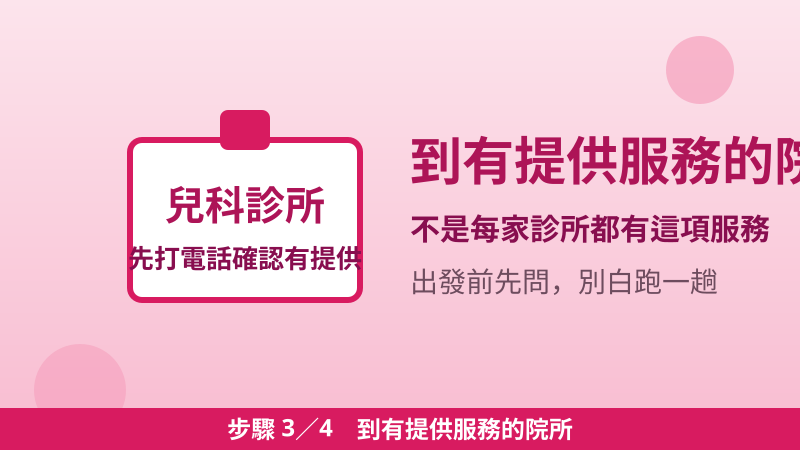
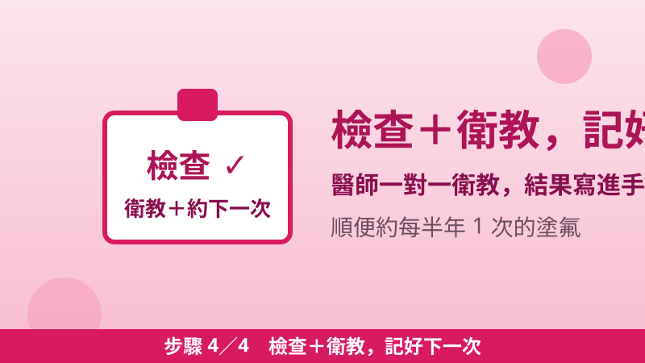

0–7 歲免費健檢 9 次全攻略：7+2 新制時程表、錯過作廢，帶手冊 4 步驟
2026 年 7 月 1 日起，國民健康署把未滿 7 歲兒童的公費預防保健服務從 7 次加到 9 次，俗稱「7+2」新制：原本 4 到 10 個月那次，拆成 4–6 個月、6–12 個月兩次；原本 3 到 7 歲那次，拆成 3–5 歲、5 到未滿 7 歲兩次，剛好補上 3 歲到入學前最容易被忽略的空窗期。9 次全部免費（政府補助，家長不用付費），只要帶著兒童健康手冊，到設有這項服務的院所就能做；但每一 次都有年齡區間，錯過就作廢、不能補做。
就診一定要帶兒童健康手冊
9 次時程表（一次看懂）
| 次數 | 建議年齡 | 這次重點看什麼 |
|---|---|---|
| 第 1 次 | 出生後 2 週至 2 個月 | 身長、體重、頭圍、瞳孔與固視、髖關節篩檢；發展：俯臥、驚嚇反應 |
| 第 2 次 | 2 至 4 個月 | 抬頭、對人微笑、眼神追視、發咕咕聲 |
| 第 3 次 | 4 至 6 個月 | 副食品添加開始談；發展：頸部支撐、手掌張開、發出笑聲 |
| 第 4 次 | 6 個月至 1 歲 | 翻身、爬、扶站、發ㄅㄚ、ㄇㄚ音；牙齒塗氟每半年 1 次從這時開始 |
| 第 5 次 | 1 歲至 1 歲半 | 放手走、說單字、聽懂簡單指令、肢體表達 |
| 第 6 次 | 1 歲半至 2 歲 | 扶欄杆上樓、手拿杯喝水、指認身體部位、模仿動作 |
| 第 7 次 | 2 歲至 3 歲 | 下樓梯、雙腳跳、說至少 10 個語詞、使用湯匙 |
| 第 8 次 | 3 歲至 5 歲 | 會跳、騎三輪車、畫圓形、自行上廁所、辨認顏色 |
| 第 9 次 | 5 歲至未滿 7 歲 | 單腳站、剪刀剪紙、說話清楚、遵守遊戲規則、注意力及活動量 |
出生 6 天內還有一次新生兒檢查，不算在 9 次內：身體診察加上先天性代謝異常疾病篩檢（出生滿 48 小時）與新生兒聽力篩檢，出院前醫院多半會先安排好。
圖文四步驟：帶寶寶去健檢這樣做

步驟 1對照時程表算好第幾次
看寶寶現在幾個月，對上表找出該做第幾次；每一次都有年齡區間，提早或延後一點沒關係，只要在區間內完成就好。

步驟 2備好兒童健康手冊＋健保卡
就診一定要帶兒童健康手冊（就醫憑證），沒帶院所無法提供這項服務。寶寶出生 60 日內還沒加保健保，可以依附爸爸或媽媽就醫。

步驟 3到設有兒童預防保健服務的院所
不是每家診所都有這項服務，出發前先打電話確認；平常看診的兒科診所或醫院多半有提供，衛生所也可以問問看。

步驟 4檢查＋衛教，記好下一次
每次包含身體診察、問診與發展診察，醫師還會一對一衛教（哺餵、副食品、視力、口腔、事故預防）；離開前確認下一次的年齡區間，順便約好每半年 1 次的牙齒塗氟。
每次檢查包含什麼？
每次健檢固定有三大部分：身體診察（身長、體重、頭圍或 BMI、營養狀態、眼睛、口腔、心雜音等）、問診（餵食、排便、睡眠、親子共讀、潔牙、螢幕接觸）與發展診察（對照兒童健康手冊上的里程碑，例如抬頭、翻身、走路、說話）。醫師會把結果寫進手冊，家長平日也可以先把觀察到的狀況記在手冊上，就診時一起問。國健署統計，健檢利用率約 84.1%、衛教 75.2%，每年約 84 萬人次使用這項服務，但還是有家長不知道 3 歲以後還有兩次，記得別只做到第 7 次就停了。
錯過怎麼辦？三條鐵規則
- 超過年齡就作廢：每一次都有適用年齡區間，超過就不能再用該次，也不能事後補做，只能等下一次按時檢查。
- 沒帶手冊不能做：未帶兒童健康手冊（就醫憑證）就診，院所無法提供兒童預防保健服務，出門前先檢查有沒有帶。
- 同一次不能重複用：手冊上已經蓋章的次數不得再使用；次數如有修改，依國民健康署公告為準。
常見問題
健檢要錢嗎？
不用。兒童預防保健服務由國民健康署補助，未滿 7 歲兒童 9 次免費，家長不需付費；牙齒塗氟也是每半年 1 次，由牙醫師執行。
發展好像比手冊上的里程碑慢，怎麼辦？
先不用自己嚇自己，每次健檢醫師都會做發展診察並給建議；平日把觀察到的狀況記在手冊上，就診時直接問醫師，必要時醫師會建議追蹤或轉介。
寶寶還沒滿月，第 1 次什麼時候做？
第 1 次是出生後 2 週至 2 個月；出生 6 天內先做新生兒檢查（含出生滿 48 小時的代謝異常疾病篩檢與聽力篩檢），出院前醫院多半會先安排好。
搬家換了縣市，次數會不會歸零？
不會。次數認的是手冊上的蓋章紀錄，不是戶籍地，搬家後帶著同一本手冊，到新地方的院所繼續做就可以。
📖 延伸閱讀：育兒津貼申請教學：0–5 歲每月 5,000–7,000 元，自己帶小孩就能領 ／ 2026 生育給付大升級：國保、沒保險的媽媽每胎 10 萬元，勞保再加碼 ／ 托育補助申請教學：未滿 2 歲送托，每月最高 13,000–19,000 元，送托 15 日內一定要申請 ／ 育兒三筆錢能不能同時領？生育給付、育兒津貼、托育補助、育嬰留停對照表 ／ 2–6 歲幼兒園費用對照：公立 1,000／非營利 2,000／準公共 3,000 元上限＋私立領育兒津貼 5,000–7,000 元
📎 資料來源
- 彰化縣衛生局「兒童健康手冊」兒童預防保健服務時程及服務項目（9 次時程表、身體診察與發展診察項目、牙齒塗氟每半年 1 次、未帶憑證無法提供服務、超過適用年齡作廢）：chshb.linebot.tw
- 彰化縣衛生局「兒童健康手冊」獻給父母（出生 60 日內尚未加保健保者可依附父母就醫、目前提供未滿 7 歲兒童 9 次預防保健服務）：chshb.linebot.tw
- 臺北時報 2026-04-02 "Child health checkups to increase to nine: HPA"（2026 年 7 月 1 日起 7 次增為 9 次；4–10 個月拆為 4–6／6–12 個月；3–7 歲拆為 3–5／5–未滿 7 歲）：taipeitimes.com
- 移民署全球資訊網「兒童預防保健 7+2 新制 7 月 1 日上路」（健檢利用率 84.1%、衛教 75.2%、每年約 84 萬人次）：news.immigration.gov.tw
最後查證日期：2026-11-12
免責聲明：本文僅供參考，補助資格與金額以政府官方最新公告為準，申請前請至官方網站或洽受理機關確認。